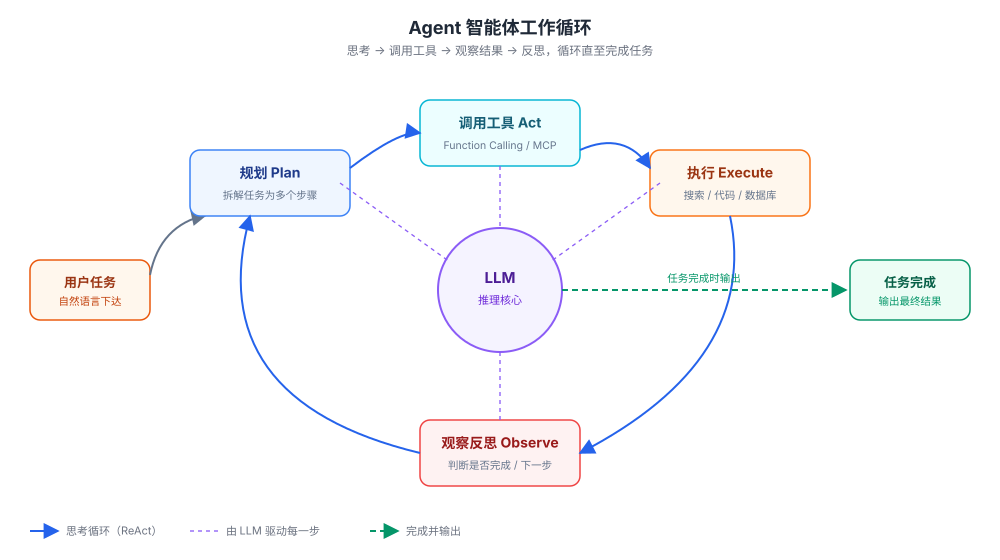

大規模モデル関連概念
大規模モデル（LLM）開発に触れたばかりのときは、Token、RAG、Embedding、Agent……といった新しい用語が次々と出てきます。それらは一見互いに独立しているように見えますが、実際には一つの完全な技術チェーンとしてつながっています。
本記事では「モデルとは何か → どう訓練するか → どう使うか → どう最適化するか」の順に、これらの概念をつなげて、初心者開発者が明確な知識の枠組みを構築できるようにします。
本記事は単なる「用語解説」ではなく、実際に実行できるPythonコードを使って、これらの概念をどう実装するかを示します。
すべてのサンプルはOpenAI互換プロトコルに基づいており、阿里云百炼、DeepSeekなどのサービスプロバイダーに変更するには、APIエンドポイントとキーを変更するだけで済みます。
Python OpenAI リファレンス：https://www.runoob.com/python3/python-openai.html
全体的な技術チェーン
各概念を分解する前に、大規模モデル技術の完全なチェーンを一目見て、全体像を把握しましょう。
上から下まで、各層はある種の核心的な問題を解決します。訓練はモデルを作り出し、最適化はそれを軽くし、駆動はそれを機能させ、検索は知識を補い、ツールはそれを実行させます。

以下では、このチェーンに沿って、上から下へ層ごとに展開します。
基本概念：モデルとは何か
この節では、最も根本的な質問に答えます。大規模モデルとは一体何であり、何によって機能するのか。
LLM（大規模言語モデル）
LLMはLarge Language Modelの略で、膨大なテキストに基づいて訓練された深層学習モデルです。
その本質は「次の単語を予測する」確率モデルであり、与えられた前のテキストから次に最も現れそうな内容を予測します。
ChatGPT、Claude、通义千问などの製品は、基盤となる技術はすべてLLMです。
Transformerと注意力メカニズム
ほとんどすべての現代のLLMはTransformerアーキテクチャに基づいています。
その中核的な革新は注意力メカニズム（Attention / Self-Attention）：モデルは特定の単語を処理する際、入力シーケンス内の他の関連する単語に動的に「注意を向け」、文脈の関係をよりよく理解できます。
たとえるなら、モデルは文を読むときに一字ずつ機械的にスキャンするのではなく、「この単語は前のどの単語と最も関係が深いか」を自動的に判断します。
Token（トークン）
モデルはテキストを「文字」や「単語」ではなく、Token単位で処理します。
1つのTokenは、漢字1文字の場合もあれば、英単語1語の場合もあり、単語の一部の場合もあります。
Tokenを理解することには、2つの直接的な実践的意義があります。
モデルのコンテキスト長の制限はToken単位で計算され、API呼び出しの課金もToken単位で計算されます。
OpenAIのオープンソースのトークナイザーライブラリtiktokenを使うと、テキストがいくつのTokenに分割されるかを直接確認できます。
実例
import tiktoken
# モデルによって異なるトークナイザーを使用します。encoding_for_model が対応するものを自動的に選択します
enc = tiktoken.encoding_for_model("gpt-4o-mini")
tokens = enc.encode("Hello world") # テキストをTokenリストに分割する
print("Token 数：", len(tokens))
print("分割結果：", [enc.decode([t]) for t in tokens])
出力結果：
Token 数量：2 切分结果：['Hello', ' world']
中国語やより長い単語に変えると、分割方法はまったく異なります。そのため、「文字数でTokenを推定する」のは正確ではありません。
コンテキストウィンドウ（Context Window）
モデルが一度に「見て」処理できる最大Token数を指します。
たとえばコンテキストウィンドウが100Kの場合、1回の対話（履歴メッセージ、あなたの質問、モデルの回答を合わせたもの）が10万Tokenを超えてはいけないことを意味します。
ウィンドウが大きいほど、モデルが「記憶」できる内容が多くなり、一度に処理できるドキュメントも長くなります。
パラメータ数（Parameters）
パラメータ数は、モデル内部の学習可能な重みの数を指し、通常はB（10億，Billion）を単位とし、例えば7B、70Bです。
これはある程度モデルの規模と能力の上限を反映しますが、唯一の指標ではありません。訓練データの質やアーキテクチャ設計も同様に重要です。
| 一般的なパラメータ数 | 規模 | 典型的な位置付け |
|---|---|---|
| 1B ~ 7B | 小〜中 | コンシューマー向けGPUでローカルに実行でき、軽量なタスクに適しています |
| 8B ~ 34B | 中 | コストパフォーマンスが高く、ほとんどの一般的なシーンをカバーします |
| 70B〜数百B | 大 | 能力が最も強力で、通常はクラウドAPI経由で呼び出します |
モデルはどのように訓練されるのか
自然な対話ができるLLMは、通常、複数の訓練段階を経て、能力を段階的に積み重ねていきます。

事前学習（Pre-training）
モデルは、膨大でラベルのないテキスト（Webページ、書籍、コードなど）上で、文法、常識、論理関係などの言語の統計的規則を学習します。
この段階は最も多くの計算資源を消費し、モデルの能力の基盤となります。
しかし、この時点のモデルは「指示に従って行動する」のがまだ得意ではなく、多くの本を読んでいるがどのように交流すればよいか分からない人に似ています。
SFT（教師ありファインチューニング）
SFTはSupervised Fine-Tuningの略です。
人手でラベル付けされた「質問—回答」ペアデータを使用して、モデルに人間の指示に従って質問に答えることを教えます。勝手にテキストを続けて書くのではなく。
RLHF（人間のフィードバックからの強化学習）
RLHFはReinforcement Learning from Human Feedbackの略です。
人間にモデルの複数の候補回答を採点またはランク付けさせ、そのフィードバックを使ってモデルを訓練し、その出力が人間の好み（より有用で、より誠実で、より安全）に合うようにします。
類似の技術としてRLAIFがあります。人間の代わりにAIが採点することで、ラベル付けコストを削減します。
両者の目的は同じで、違いは「採点する人」が実在の人間か、別のAIかという点だけです。
アラインメント（Alignment）
アラインメントはよりマクロな概念で、モデルの行動や価値観を人間の期待や意図に合わせることを指します。
これはAI安全性分野の中心的な議題であり、SFT、RLHFなどの各訓練段階に貫かれています。SFTとRLHFは本質的にはどちらも「アラインメント手段」です。
ファインチューニング（Fine-tuning）
すでに訓練された汎用モデルを基礎に、特定の分野（法律、医療、カスタマーサービスなど）のデータを使ってさらに訓練します。
ゼロから事前学習するのに比べて、ファインチューニングのコストははるかに低く、汎用モデルを専門的なシーンに適応させる一般的な方法です。
MoE（混合エキスパートモデル）
MoEはMixture of Expertsの略で、モデルのアーキテクチャ設計の一種です。
モデル内部には複数の「エキスパート」サブネットワークが含まれており、入力処理のたびにその一部だけが活性化され、すべてのパラメータが計算に参加するわけではありません。
これにより、モデル全体の規模を拡大しながら、実際の計算量を抑え、「パラメータは大きいが推論は速い」を実現できます。
| 訓練段階 | 英語 | 主な役割 | 依存するデータ |
|---|---|---|---|
| 事前学習 | Pre-training | 言語の規則を学習し、能力の基盤を築く | 大量のラベルなしテキスト |
| 教師ありファインチューニング | SFT | 指示に従って質問に回答することを学ぶ | 人手でラベル付けされたQAペア |
| 人間のフィードバックによる強化学習 | RLHF | 人間の好みにより合致した出力 | 回答に対する人間の採点・ランキング |
| アライメント | Alignment | モデルを有用・誠実・安全にする | 上記の各段階全体にわたる |
開発者はどう大規模モデルを使うのか
これは初心者開発者が最も注目すべき部分です。APIを通じて大規模言語モデルをアプリケーションにどう活用するかということです。
この節ではまず、最も基本的でそのまま実行できる対話呼び出しの例を示し、その後各概念を説明します。
最も基本的なAPI対話呼び出し
次のコードは、完全な対話リクエストの例を示しており、System Prompt・ユーザーメッセージ・温度という3つの概念を使用しています。
実例
from openai import OpenAI
import os
# クライアントを作成。OpenAI互換プロトコルのサービスならこのコードを再利用できます。
# 他のサービスプロバイダーに変更する場合は api_key と base_url を変更するだけです
client = OpenAI(
api_key=os.getenv("OPENAI_API_KEY"), # 環境変数からシークレットキーを読み取る（必須）
)
# 対話リクエストを1回送信
response = client.chat.completions.create(
model="gpt-4o-mini", # モデル名（必須）、使用するサービスプロバイダーに合わせて変更
messages=[
# System Prompt：モデルの役割と行動規範を事前に設定
{"role": "system", "content": "あなたはプロのPythonプログラミングアシスタントです。技術関連の質問にのみ回答します。"},
# ユーザーメッセージ：実際の質問
{"role": "user", "content": "runoobとは何ですか？"},
],
temperature=0.7, # 生成温度、0〜2の範囲。大きいほど多様になる（後述）
)
# モデルの回答を出力
print("回答：", response.choices[0].message.content)
# usageフィールドは、この呼び出しで消費したToken数を記録します（課金の根拠）
print("入力Token数：", response.usage.prompt_tokens)
print("出力Token数：", response.usage.completion_tokens)
出力結果：
回答：runoob（菜鸟教程）是一个提供编程教程的中文学习网站…… 输入 Token 数：33 输出 Token 数：18
戻り値の構造にあるusageフィールドは、前述のToken概念の具体例です。この呼び出しで消費したToken数が分かり、課金の根拠にもなります。
プロンプト（Prompt）
Promptとは、モデルに与える指示や質問であり、モデル出力の質を直接左右します。
より明確で効果的なPromptを書くためのテクニックを研究することを、プロンプトエンジニアリング（Prompt Engineering）。
一般的な手法には、具体例を示す、段階的に考えるよう求める、出力形式を指定する、などがあります。
システムプロンプト（System Prompt）
ユーザーが正式に入力する前に、モデルに事前に設定する指示で、モデルの役割・行動規範・背景知識を定義するために使います。
前述の例にある「あなたはプロのPythonプログラミングアシスタントです。技術関連の質問にのみ回答します。」は、典型的なSystem Promptです。
System Promptとユーザーメッセージの違い：System Promptは「モデルがどう振る舞うべきか」を設定し、ユーザーメッセージは「具体的に何をするか」を伝えます。
一般的な規範をSystem Promptに入れておくと、複数ターンの対話でも回答スタイルを一貫させられます。
温度（Temperature）
温度はモデル出力のランダム性を制御するパラメータで、通常0から2の範囲を取ります。
温度が高いほど回答は「創造的」でランダムになり、間違いやすくなります。温度が低いほど回答は保守的で安定します。
| 値の範囲 | 出力の特徴 | 適用シーン |
|---|---|---|
| 0に近い | ほぼ決定的、安定して再現可能 | コード作成、データ抽出、事実に基づくQ&A |
| 0.3 ~ 0.7 | ある程度の変化はあるが制御可能 | 一般的な対話、翻訳、要約 |
| 0.8 ~ 1.2 | 創造性が高く、多様 | ブレインストーミング、コピーライティング、ストーリー創作 |
| 1.2より大きい | 非常にランダムで、脱線しやすい | 慎重に使用。特殊なクリエイティブシーンのみ |
インコンテキスト学習（In-Context Learning）
モデルに一切ファインチューニングをする必要はなく、Promptにいくつか例を示すだけで、モデルは「見様見真似」で新しい類似タスクを実行できます。
これはプロンプトエンジニアリングで最もよく使われるテクニックの1つで、Few-shot Learning（少数ショット学習）とも呼ばれます。
思考の連鎖（Chain-of-Thought, CoT）
複雑な問題を段階的な推論プロセスに分解させてから最終回答を導かせることで、いきなり結論に飛ばないようにする手法です。
実践により、この方法は数学や論理推論などの複雑なタスクでのモデルの精度を大幅に向上させることが示されています。
最も簡単な方法は、Promptに「段階的に考えてください」という一言を加えることです。
幻覚（Hallucination）
ハルシネーションとは、モデルがもっともらしく流暢に聞こえるが、実際には誤っている、または根拠なく作り出した内容を生成することを指します。
これはLLMに現在広く見られる欠陥で、モデルが本質的に「最も可能性の高い文章を続ける」ことをしており、「事実を検証する」ことをしていないためです。
ハルシネーションを軽減する主要な手段の1つが、後述のRAGです。まず実際の資料を検索し、その資料に基づいてモデルに回答させます。
モデルを外部世界に接続する
単純なLLMは、学習時に得た知識だけに頼って回答するため、最新情報を知らず、自ら行動することもできません。
この節で紹介する技術は、この2つの欠点を解決する鍵です。
Embedding（埋め込み）
Embeddingは、テキストや画像などの内容を一連の数字（ベクトル）に変換します。
変換後、コンピュータはベクトル間の距離を計算することで、2つの内容が「意味的に」似ているかどうかを判断できます。
これは検索、レコメンド、RAGなどのアプリケーションの基盤です。
ベクトルデータベース
ベクトルデータベースは、Embeddingベクトルの保存と検索に特化したもので、Pinecone、Milvus、Chromaなどがあります。
大量のベクトルの中から、クエリと意味的に最も似ている内容を高速に見つけられるため、RAGシステムの構築に欠かせないコンポーネントです。
RAG（検索拡張生成）
RAGの正式名称はRetrieval-Augmented Generationです。
そのワークフローは次のとおりです。まず外部ナレッジベースをベクトル化してベクトルデータベースに保存します。ユーザーが質問すると最も関連性の高い内容を検索します。そして検索結果を質問とともにモデルに渡して回答を生成させます。
RAGはハルシネーションを効果的に軽減し、モデルが学習データ外の新しい知識にも回答できるようにします。

以下は、外部ベクトルライブラリに依存せず、OpenAI Embeddingとnumpyで実装した最小限のRAGの例です。原理を理解するのに役立ちます。
実例
from openai import OpenAI
import numpy as np
import os
client = OpenAI(api_key=os.getenv("OPENAI_API_KEY"))
# 非常に小さな「ナレッジベース」を模擬：数件のドキュメント
documents = [
"runoobは、プログラミングチュートリアルを提供する中国語の学習サイトです。",
"RAGは、実際の資料を検索してから生成することで、大規模言語モデルのハルシネーションを効果的に減らせます。",
"Pythonはインデントでコードブロックを表します。通常、各レベルのインデントはスペース4つが推奨されます。",
]
# ステップ1：ナレッジベースをベクトル化（オフラインで一度だけ実行）
doc_resp = client.embeddings.create(input=documents, model="text-embedding-3-small")
doc_vectors = [d.embedding for d in doc_resp.data]
# ステップ2：ユーザーの質問をベクトル化
question = "runoobとは何ですか？"
query_vector = client.embeddings.create(
input=question, model="text-embedding-3-small"
).data[0].embedding
# ステップ3：コサイン類似度で最も関連性の高いドキュメントを見つける
def cosine(a, b):
a, b = np.array(a), np.array(b)
return float(a @ b / (np.linalg.norm(a) * np.linalg.norm(b)))
scores = [cosine(query_vector, v) for v in doc_vectors]
best_doc = documents[int(np.argmax(scores))] # 類似度が最も高いドキュメント
print("検索された資料：", best_doc)
# ステップ4：検索した資料を質問とともにモデルに渡して回答を生成
response = client.chat.completions.create(
model="gpt-4o-mini",
messages=[
{"role": "system", "content": "以下の資料だけに基づいて質問に回答してください。資料にない情報は作り出さないでください。"},
{"role": "user", "content": f"資料：{best_doc}\n\n質問：{question}"},
],
)
print("回答：", response.choices[0].message.content)
出力結果：
检索到的资料：runoob 是一个提供编程教程的中文学习网站。 回答：runoob（菜鸟教程）是一个提供编程教程的中文学习网站。
実際のプロジェクトでは、ステップ3の「メモリ内で類似度を計算する」を「ベクトルデータベースを呼び出して検索する」に置き換えるだけで、プロセスは完全に同じです。
ファンクションコーリング（関数呼び出し）
Function Callingは、大規模言語モデルが外部ツールやAPIを呼び出してタスクを実行できるようにします。例えば、リアルタイムの天気の確認、数学計算の実行、データベースの照会、メールの送信などです。
これは、モデルの「文字を生成できるだけで、動作を実行できない」という欠点を補い、大規模言語モデルがチャットボットから実用的なツールへ進化するための重要な一歩です。
その仕組みは2ラウンドの対話です。1ラウンド目でモデルがどの関数を呼び出し、どのパラメータを渡すかを決定します。あなたのコードが実際に関数を実行した後、2ラウンド目で結果を返送し、モデルに自然言語の回答を生成させます。
実例
import json
import os
client = OpenAI(api_key=os.getenv("OPENAI_API_KEY"))
# モデルが呼び出せるツール（関数）を定義
tools = [
{
"type": "function",
"function": {
"name": "get_weather",
"description": "指定した都市のリアルタイム天気を取得",
"parameters": {
"type": "object",
"properties": {
"city": {"type": "string", "description": "都市名、例：杭州"}
},
"required": ["city"],
},
},
}
]
# 実際にクエリを実行するローカル関数（実際のプロジェクトでは本物の天気APIに置き換える）
def get_weather(city):
return f"{city} 今日は晴れ、気温28°C"
# 第1ラウンド：問題をモデルに渡し、モデルがどのツールを呼び出すか、どんなパラメータを渡すかを決定する
response = client.chat.completions.create(
model="gpt-4o-mini",
messages=[{"role": "user", "content": 「今日の杭州の天気はどうですか？」}],
tools=tools,
)
tool_call = response.choices[0].message.tool_calls[0]
args = json.loads(tool_call.function.arguments) # パラメータを解析する。例：{"city": "杭州"}
result = get_weather(args["city"]) # 実際にツールを実行する
print(「ツール実行結果：」, result)
# 第2ラウンド：ツールの結果をモデルに返し、その結果に基づいて自然言語の回答を生成させる
follow_up = client.chat.completions.create(
model="gpt-4o-mini",
messages=[
{"role": "user", "content": 「今日の杭州の天気はどうですか？」},
response.choices[0].message, # モデルが前のステップで「ツールを呼び出す」と決定した内容
{"role": "tool", "tool_call_id": tool_call.id, "content": result}, # ツールが返した結果
],
tools=tools,
)
print(「最終回答：」, follow_up.choices[0].message.content)
出力結果：
工具执行结果：杭州 今天晴，气温 28°C 最终回答：杭州今天是晴天，气温大约 28°C，适合外出活动。
MCP（モデルコンテキストプロトコル）
MCPの正式名称はModel Context Protocolで、大規模モデルが外部ツールやデータソースに標準化された形で接続するためのオープンプロトコルです。
これは「AI分野のUSBインターフェース」に例えることができます。異なるツールやデータソースでも、このプロトコルに従えば、MCPに対応したさまざまな大規模モデルから統一的に呼び出せます。
これは、Function Callingの時代にあった「ツールを接続するたびに毎回連携を繰り返す」という問題を解決し、開発の手間を削減します。
Agent（エージェント）
Agentは、大規模モデルを基盤に構築された、タスクを自律的に計画し、ツールを呼び出し、複数ステップの操作を実行できるシステムです。
一問一答の対話と比べて、Agentは複雑なタスクを単独で完了できる「デジタル社員」に近い存在です。例えば「資料を調べる → コードを書く → テストする → バグを修正する」という一連のプロセスを自動で完了させます。
Agentが依存する中核のループはReAct（Reason + Act）です。次のステップを考え、ツールを呼び出し、結果を観察して、また考える、という流れをタスクが完了するまで繰り返します。

マルチモーダル（Multimodal）
マルチモーダルとは、モデルがテキストだけでなく、画像、音声、動画など複数種類のデータを同時に理解、および/または生成できることを指します。
現在、多くの主流な大規模モデルが、画像の読み取りやグラフ分析などのマルチモーダル能力を備えています。
| 技術 | 解決する問題 | ひとことで言うと |
|---|---|---|
| Embedding | コンピュータに意味的な類似度を理解させる | テキストを計算可能なベクトルに変換する |
| ベクトルデータベース | ベクトルを効率的に保存・検索する | 意味検索のための専用ストレージ |
| RAG | モデルが最新の知識を知らない、または捏造してしまう | 資料を調べてから回答する |
| Function Calling | モデルはテキストを生成できるだけで、動作を実行できない | モデルに外部ツールを呼び出させる |
| MCP | ツールを接続するたびに毎回開発が必要 | AIツールの統一USBインターフェース |
| Agent | 単一ターンの対話では複雑なタスクを完了できない | 複数のステップを自律的に計画できるデジタル社員 |
モデルをより速く、より省資源で動かす
モデルの能力が強いほど、往々にしてサイズが大きく、実行コストも高くなります。
次の2つの概念は、モデルを実際のデプロイ時により軽量かつ高効率にするためのものです。
量子化（Quantization）
量子化は、モデルのパラメータを高精度（例：32ビット浮動小数点数）から低精度（例：8ビットまたは4ビット整数）に圧縮します。
これにより、モデルが使用するGPUメモリ（VRAM）を大幅に削減し、推論速度を向上できます。代償として精度がある程度低下しますが、多くのシナリオでは許容できます。
モデル蒸留（Model Distillation）
蒸留では、能力が高いがサイズの大きい「教師モデル」の出力を使って、よりサイズの小さい「生徒モデル」を学習させます。
目的は、小さいモデルに大規模モデルの能力を可能な限り学習させることです。蒸留後のモデルはサイズが小さく、推論が速く、デプロイコストも低くなります。
| 比較項目 | 量子化 Quantization | 蒸留 Distillation |
|---|---|---|
| 何をするか | パラメータ精度を圧縮（32ビット → 8/4ビット） | 大規模モデルで小さいモデルを教える |
| 変わるもの | 同じモデルの数値表現 | 新しい小さいモデルを生成する |
| 主なメリット | GPUメモリを節約、速度を向上 | 小さいモデルがより強く、より高速 |
| 学習が必要か | 通常は再学習が不要 | 生徒モデルの学習が必要 |
| 典型的なシナリオ | 大規模モデルを限られたGPUメモリに収める | 小さいモデルで大規模モデルを代替して本番稼働させる |
初心者の学習ロードマップ
初心者開発者にとって、すべての概念を一度に完全に理解する必要はありません。
以下の順序で段階的に進めることをおすすめします。断片的に概念を覚えるよりも、体系立てて理解しやすくなります。
| 段階 | 習得する概念 | できるようになること |
|---|---|---|
| ステップ1 | LLM、Token、Prompt | APIを呼び出して対話を完了する |
| ステップ2 | Embedding、ベクトルデータベース、RAG | モデルに外部知識を接続する |
| ステップ3 | Function Calling、Agent | モデルにツールを呼び出させ、自律的にタスクを完了させる |
| ステップ4 | ファインチューニング、量子化、蒸留 | 本番環境でのデプロイと最適化 |
各概念の定義を丸暗記する必要はありません。この記事のコード例を実際に一通り実行してみると、理解がはるかに深まります。
核心用語クイックリファレンス
本文に登場する重要な用語を1つの表にまとめ、「カテゴリ」ごとにグループ化しました。いつでも参照・復習しやすい構成です。
| 用語 | 英語 / 正式名称 | カテゴリ | ひとこと解説 |
|---|---|---|---|
| LLM | Large Language Model（大規模言語モデル） | 基礎概念 | 膨大なテキストで学習した深層学習モデル。本質は「次の単語を予測する」こと |
| Transformer | Transformer | 基礎概念 | ほぼすべての現代のLLMが共通して使用する基盤となるネットワークアーキテクチャ |
| 注意力メカニズム（Attention） | Attention / Self-Attention | 基礎概念 | モデルが入力内の関連する単語に動的に注目し、文脈の関係を理解できるようにする |
| Token | Token（トークン） | 基礎概念 | モデルがテキストを処理する最小単位。コンテキスト長とAPIの課金はこれに基づいて計算される |
| コンテキストウィンドウ | Context Window | 基礎概念 | モデルが一度に「見て」処理できる最大Token数 |
| パラメータ数 | Parameters | 基礎概念 | モデル内部の学習可能な重みの数。通常B（10億）単位で表される |
| 事前学習 | Pre-training | 学習 | 膨大なラベルなしテキストから言語の規則性を学習し、能力の基盤を築く |
| SFT | Supervised Fine-Tuning（教師ありファインチューニング） | 学習 | 質問と回答のペアデータを使って、モデルが指示に従って回答するよう学習させる |
| RLHF | Reinforcement Learning from Human Feedback | 学習 | 人間のスコアリングでモデルの出力を調整し、人間の好みにより適合させる |
| RLAIF | Reinforcement Learning from AI Feedback | 学習 | AIが人間の代わりにスコアリングし、アノテーションコストを削減する |
| アライメント | Alignment | 学習 | モデルの振る舞いを人間の意図に適合させ、有用・誠実・安全を実現する |
| ファインチューニング | Fine-tuning | 学習 | 汎用モデルをドメインデータでさらに学習させ、専門的なシナリオに適応させる |
| MoE | Mixture of Experts（混合エキスパートモデル） | 学習 | 複数のエキスパートサブネットワークを必要に応じて活性化し、パラメータ数が多いのに推論が高速 |
| Prompt | Prompt（プロンプト） | 利用 | モデルに入力する指示または質問。出力品質を直接左右する |
| プロンプトエンジニアリング | Prompt Engineering | 利用 | より明確で効果的なPromptを書くためのテクニックを研究する |
| System Prompt | System Prompt（システムプロンプト） | 利用 | モデルの役割と行動規範をあらかじめ設定する指示 |
| 温度 | Temperature | 利用 | 出力のランダム性を制御するパラメータ。0〜2の値を取り、値が大きいほど出力が多様化する |
| インコンテキスト学習 | In-Context Learning | 利用 | Prompt内に数個の例を示すだけでその通りに実行する。Few-shotとも呼ばれる |
| 思考の連鎖（Chain of Thought） | Chain-of-Thought（CoT） | 利用 | モデルに段階的に推論させてから回答させ、複雑なタスクの精度を向上させる |
| 幻覚（ハルシネーション） | Hallucination | 利用 | モデルが流暢だが誤った内容や根拠のない内容を生成すること |
| Embedding | Embedding（埋め込み） | 外部連携 | コンテンツをベクトルに変換し、意味的な類似度の測定に用いる |
| ベクトルデータベース | Vector Database | 外部連携 | ベクトルの保存と検索に特化したデータベース。例：Milvus、Chroma |
| RAG | Retrieval-Augmented Generation（検索拡張生成） | 外部連携 | 実際の資料を検索してから生成することで、幻覚を軽減し、新しい知識を補う |
| Function Calling | Function Calling（関数呼び出し） | 外部連携 | モデルに外部ツールやAPIを呼び出させ、実際のアクションを実行させる |
| MCP | Model Context Protocol（モデルコンテキストプロトコル） | 外部世界 | ツールを標準化して接続するためのオープンプロトコル、AIの「USBインターフェース」 |
| Agent | Agent（エージェント） | 外部世界 | 自律的に計画し、ツールを呼び出し、複数ステップで複雑なタスクを実行できるシステム |
| ReAct | Reason + Act | 外部世界 | Agentの核心的なループ：思考→行動→観察→再思考 |
| マルチモーダル | Multimodal | 外部世界 | テキスト、画像、音声などの多様なデータを同時に理解および/または生成する |
| 量子化 | Quantization | 最適化 | パラメータ精度を圧縮（32ビット→8/4ビット）、メモリ節約、高速化 |
| モデル蒸留 | Model Distillation | 最適化 | 大規模モデルで小規模モデルを教え、より小型で高速なデプロイモデルを得る |
クリックしてノートを共有
<p style="font-size:14px;">ノートは本記事の内容の拡張である必要があります！</p><br> <p style="font-size:12px;"><a href="../tougao.html" target="_blank">記事投稿はこちらをクリック</a></p> <p style="font-size:14px;"><a href="../w3cnote/runoob-user-test-intro.html" target="_blank">登録招待コードの取得方法</a></p> <h3 class="text-muted"><i class="fa fa-info-circle" aria-hidden="true"></i> ノートを共有する前に<a href=";.html" class="runoob-pop">ログイン</a>！</h3> <p><a href="../w3cnote/runoob-user-test-intro.html" target="_blank">登録招待コードの取得方法</a></p>